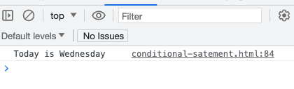

An array is able to store multiple values in a single variable.
Arrays are able to contain any kind of data type (numbers, strings, objects, even other arrays).
To declare an array, we use the array's literal syntax.
Array literal: It is simply represented by square brackets and a comma at the end of each value or element. However, if the values are strings or text, in JavaScript strings need to be enclosed in single or double quotes.
Here are some more examples of literal syntax in JavaScript:
String literal: Equal sign plus single or double quotes.
Number literal: Create a variable "number" with a value of 42.
Boolean literal: The variable "isTrue" has a Boolean value of true. We can use the variable "isTrue" in conjunction with an if statement, any function, or object.
Object literal: The object variable "person" has multiple related values such as name, age, and profession. We can add as much information as we want to the variable. For example, we can include address, telephone, height, residency, and even boolean values such as isMarried: true. "isMarried" is the property and true is the value.
Array literal: All the values are inside square brackets and separated by commas. Since colors are string values, they need to be quoted.
Regular Expression literal: It is used for pattern recognition.

Back to Array
To declare an array, we use square brackets [].
Each element is separated by a comma.
Zero-based indexing is used to access individual elements.
If we want to access the first element of the above array, we use numbers[0].
If we console.log(numbers[0]), the result will be 1.
Arrays in JavaScript are dynamic. "Dynamic" refers to the ability to adapt, modify, or update in response to various conditions.
Some built-in methods of arrays:
push(): We can use the push built-in method to add an element at the end of an array.
pop(): When we want to retrieve and remove the last element of an array.
in above example by calling the function fruits.pop() we have removed the last array element "orange". The pop method also return the removed element, which we have stored in a new variable removedfruit.
unshift(): Add one or more elements to the beginning of an array and return the new length of the array into a new variable newLength
reverse(): Reverse the order of the array.
There are more built-in methods that can be used with arrays, such as sort(), splice(), index(), map(), and so on.